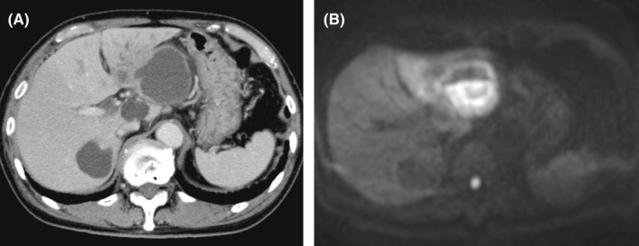
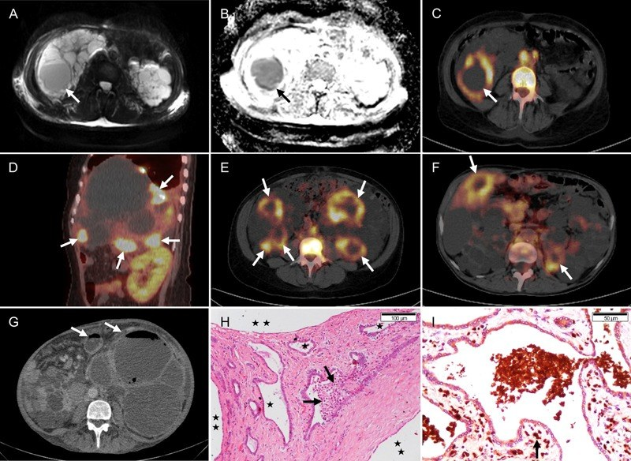
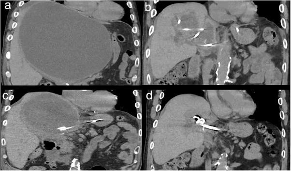
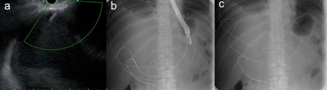

104 — Nhiễm trùng nang gan trong bệnh gan đa nang (ADPKD/PLD) / Infected hepatic cyst
Tags: pattern:nang-phuc-tap vung:gan vung:than protocol:PET-CT-nang-gan incidentaloma:nang-gan
Mức chắc chắn (certainty): tổng hợp y văn (literature synthesis) — nhóm tự biên từ y văn mở (Kidney Int Rep 2026, Braz J Med Biol Res 2014, J Gen Fam Med 2022, DEN Open 2026, Clin Kidney J 2019–2020), đối chiếu khuyến cáo KDIGO 2025 và EASL mà các bài gốc trích dẫn; không gắn một ca nguyên văn duy nhất.
1. Tổng quan bệnh học – cơ chế hình ảnh
- Bối cảnh: nang gan có ở > 90% bệnh nhân ADPKD trên 35 tuổi; nhiễm trùng nang gan (liver cyst infection — LCI) xảy ra ở ≤ 3% bệnh nhân ADPKD nhưng là biến chứng nặng nhất của gan đa nang (polycystic liver disease — PLD): nhập viện nhiều lần, suy dinh dưỡng, có ca phải cắt gan bán phần hoặc ghép gan (PMC12799584).
- Vì sao nang bị nhiễm: biểu mô lót nang có kiểu hình biểu mô đường mật tăng tiết và tăng sinh; khi có nhiễm khuẩn huyết thoáng qua (hay từ đường tiêu hóa, nhất là túi thừa đại tràng — 36% bệnh nhân trong loạt có túi thừa) hoặc can thiệp đường mật, vi khuẩn vào dịch nang tù đọng → viêm thành nang + ứ mủ (PMC12799584).
- Tiêu chuẩn chẩn đoán kinh điển (Sallée 2009, đang được dùng trong các loạt lớn): sốt > 38,5 °C kéo dài 3 ngày + đau/ấn đau gan + CRP > 50 mg/L + KHÔNG có bằng chứng xuất huyết nang trên CT (PMC7367107). Tiêu chuẩn này không đặc hiệu — chính vì vậy hình ảnh giữ vai trò quyết định.
- TẠI SAO đọc được trên từng phương thức (vật lý + mô bệnh):
- CT: dịch nang đơn giản 0–15 HU; dịch mủ có thành phần tế bào + protein nên đậm độ cao hơn nước — thực hành dùng ngưỡng chênh ≥ 10 HU so với nang đơn giản kề bên (dữ liệu ngưỡng này xây trên nang thận — xem bài 164). Dấu hiệu phụ: thành nang dày, viêm mỡ quanh nang, bóng khí trong nang (thể sinh hơi). Hạn chế cốt tử: thành nang mỏng, không ngấm thuốc rõ, và trong gan đa nang có hàng chục nang nằm sát nhau → CT âm tính ở 7/7 đợt trong một loạt, và chỉ gợi ý 5/13 đợt (39%) trong loạt lớn (PMC7367107, PMC12799584).
- MRI: mủ nhớt, nhiều tế bào → hạn chế khuếch tán: DWI sáng, ADC thấp; T2 không đồng nhất (khác nang đơn giản T2 rất sáng, đồng nhất); T1 có thể tăng nhẹ do protein, nhưng không mất tín hiệu khi fat-sat (khác mỡ). Trong loạt 112 đợt, MRI chỉ được làm 2 đợt — số liệu quá nhỏ để nói độ nhạy, nhưng cơ chế DWI là chốt để phân biệt mủ với nước.
- ¹⁸F-FDG PET/CT: bạch cầu trung tính trong thành và dịch nang tiêu thụ glucose mạnh → ổ ngấm FDG khu trú. Đây là phương thức nhạy nhất: 94/98 đợt (96%) có PET dương tính, và 65% (61/94) có nhiều nang nhiễm cùng lúc (PMC12799584). Vì vậy PET/CT không chỉ "chẩn đoán có/không" mà định vị nang thủ phạm — điều CT/MRI thường không làm được trong gan đa nang.
- Siêu âm: rẻ, đầu tay, nhưng trong PLD rất khó vì vô số nang; chỉ dùng để chọc hút/dẫn lưu dưới hướng dẫn.
2. Mẫu hình + chẩn đoán phân biệt theo vị trí (gamut)
- Mẫu hình A — một nang "đặc hơn" các nang còn lại: nhiễm trùng nang, xuất huyết nang, nang đạm/mucin, nang có vách, u nhầy nhú trong ống mật (IPNB) hoặc u nang nhầy buồng trứng di căn phúc mạc.
- Mẫu hình B — nang + khí: nhiễm trùng sinh hơi (E. coli, Klebsiella), rò nang–đường mật/ruột sau can thiệp, áp-xe gan trên nền nang, khí do thủ thuật trước đó.
- Mẫu hình C — tổn thương gan "dạng nang" nhưng KHÔNG phải nang: áp-xe gan (không có vỏ biểu mô), ung thư biểu mô tế bào gan (HCC) hoại tử, di căn hoại tử, u mạch máu khổng lồ (ngấm thuốc lan tỏa), nang sán lá gan (vỏ canxi, nang con).
- Mẫu hình D — sốt + đau hạ sườn phải ở bệnh nhân ADPKD: nhiễm trùng nang gan, nhiễm trùng nang thận (đi kèm ở 3% đợt), viêm đường mật, viêm túi mật, áp-xe dưới hoành, viêm túi thừa.
- Mnemonic "SỐT–NANG–PET": Sốt/CRP cao · Ố (ổ nang lớn nhất, căng, thành dày) · Tăng đậm độ dịch + hạn chế khuếch tán · Nang nhiều ổ (65% nhiều nang cùng lúc) · Anh hưởng cả thận · Gas (thể sinh hơi) · PET là chốt định vị.
- Bối cảnh quyết định gamut: sốt + CRP 197 ± 96 mg/L → nhiễm trùng; đau + Hb giảm, không sốt → xuất huyết; sốt nhẹ + vàng da + giãn đường mật → viêm đường mật; không triệu chứng, tình cờ → nang đơn giản/xuất huyết cũ.
3. Bảng so sánh phân biệt (ma trận đối chiếu)
| Thực thể (entity) | Hình ảnh điển hình (US/CT/MRI/PET) | Chốt vào (rule-in) | Chốt loại (rule-out) | Gợi ý xác nhận |
|---|---|---|---|---|
| Nang gan nhiễm trùng (LCI) | Nang đậm độ cao hơn nang bên cạnh (chênh ≥ 10 HU), thành dày, viêm mỡ quanh nang; DWI sáng/ADC thấp; PET ngấm FDG khu trú | Sốt + CRP > 50 mg/L + ổ FDG trong nang (PET dương 96% các đợt) | Nang T1 sáng đồng nhất, không ngấm FDG, CRP bình thường → không phải nhiễm trùng | PET/CT là chốt; cấy máu (dương 80% ca có vi khuẩn); chọc hút nang khi cần |
| Xuất huyết nang | CT 30–100 HU, không ngấm; MRI T1 sáng, không mất tín hiệu fat-sat, mức dịch–dịch; không ngấm FDG | T1 sáng + không ngấm + không sốt/CRP thấp | Sốt + CRP cao + FDG dương → nhiễm trùng | So phim cũ; MRI T1 ± fat-sat |
| Nang đơn giản | 0–15 HU, thành không thấy, T2 rất sáng đồng nhất, không vách/nốt | Đồng nhất, không thành, không triệu chứng | Thành dày, vách, nốt, đậm độ cao → không đơn giản | Không cần làm gì thêm |
| Áp-xe gan (không do nang) | Ổ dịch có vỏ ngấm thuốc, khí, viêm mỡ; bệnh nhân nhiễm trùng rõ | Vỏ ngấm thuốc + khí + sốt cao | Không thấy vỏ ngấm, nằm đúng vị trí nang cũ → nghĩ nang nhiễm | Chọc hút dưới hướng dẫn, cấy |
| HCC hoại tử / di căn hoại tử | Phần đặc ngấm thuốc thì động mạch + washout, vỏ không đều; FDG dương nhưng không theo hình nang | Thành phần đặc ngấm thuốc trong "nang" | Nang thuần dịch, không có nốt ngấm → loại u | MRI đa thì (HBP), sinh thiết |
| IPNB / u nang nhầy | Nang nhiều vách, thành dày không đều, giãn ống mật thông với nang, nốt trong lòng | Thông với cây mật + nốt/vách dày | Nang đơn thuần không thông mật, không nốt | MRCP, nội soi siêu âm |
| Viêm đường mật | Giãn ống mật trong gan, dày thành ống mật, có thể sỏi; không có ổ nang đơn độc | Giãn đường mật + tam chứng Charcot | Không giãn mật, có nang thủ phạm rõ → LCI | MRCP; ERCP khi cần giải áp |
| Nang sán lá gan | Nang vỏ canxi, nang con, không ngấm; bờ rõ | Vỏ canxi + nang con + dịch tễ | Không canxi, không nang con → không phải sán | Huyết thanh chẩn đoán; không chọc khi chưa loại sán |

(A) CT cản quang: nang lớn thùy trái, thành không ngấm thuốc rõ; (B) DWI: nang tăng tín hiệu mạnh do dịch mủ hạn chế khuếch tán. Nguồn: Yoshino Y, Ishida T. — J Gen Fam Med 2022 (PMC9634129), CC BY 4.0.Ba dấu hiệu quyết định trên mặt cắt
- "Nang sáng hơn hàng xóm" trên CT: so cùng một lát cắt, cùng cửa sổ với nang đơn giản bên cạnh — chênh ≥ 10 HU là gợi ý (không tự chốt).
- DWI/ADC: mủ hạn chế khuếch tán; nang xuất huyết cũ không hạn chế rõ → đây là cách phân biệt mủ/máu không cần tiêm thuốc, hữu ích khi bệnh nhân suy thận.
- FDG: ổ ngấm khu trú đúng thành/dịch nang, không phải ngấm lan tỏa của nhu mô gan bị viêm — và luôn đối chiếu với nang thủ phạm nghi ngờ trên CT/MRI để tránh dương tính giả do viêm quanh nang.
4. Protocol chụp + phân tầng điều trị
Chuỗi hình ảnh (từ rẻ đến đắt, theo câu hỏi lâm sàng):
- Siêu âm bụng: xác định có nang, có thành dày/dịch "không trong"; không đủ để loại trừ trong PLD.
- CT bụng có cản quang 3 thì (lát 1–2 mm): thì động mạch – tĩnh mạch cửa – muộn; mục tiêu là loại u đặc ngấm thuốc và tìm khí, vách, thành dày. Không dùng CT đơn thuần để "trấn an": trong loạt 112 đợt, CT chỉ gợi ý 39% và âm tính 7/7 ở loạt nhỏ (PMC12799584, PMC7367107).
- MRI gan (T1 in/out-phase, T1 fat-sat, T2, DWI/ADC, sau tiêm thì muộn): khi CT không kết luận hoặc cần phân biệt mủ–máu–u; không cần gadolinium nếu chỉ cần DWI (thận yếu).
- ¹⁸F-FDG PET/CT: chỉ định khi sốt/CRP cao kéo dài mà CT/MRI không định vị được nang thủ phạm, hoặc khi cân nhắc dẫn lưu/sinh thiết. Nhịn ăn ≥ 6 giờ, glucose máu < 11 mmol/L trước tiêm; đọc sau 60 phút. Giá trị: dương tính 96% các đợt; hạn chế: viêm quanh nang, nhiễm trùng ổ khác, mô ghép thận viêm → dương tính giả.
- Chọc hút/dẫn lưu qua da: vừa điều trị vừa lấy mẫu (nhuộm Gram, cấy, tế bào); ưu tiên nang lớn, nông, dễ tiếp cận, có thành dày hoặc khí; luôn loại trừ nang sán trước khi chọc.
Ngưỡng điều trị (số liệu từ loạt 112 đợt, PMC12799584):
- Kháng sinh ≥ 14 ngày là yếu tố bảo vệ với thất bại điều trị/tái phát sớm (OR 0,03; 95% CI 0–0,23); ≥ 28 ngày bảo vệ với tái phát trong 12 tháng (OR 0,12; 95% CI 0,02–0,65). Thời gian thực tế trong loạt: trung vị 40 ngày (28–42); khuyến cáo ≥ 4 tuần, kéo dài tùy ca (KDIGO 2025/EASL).
- Vi khuẩn: xác định được tác nhân 63% (cấy máu 80% ca dương); E. coli 56%, K. pneumoniae 14%, đa loài 7%. E. coli kháng cotrimoxazole 34%, amoxicillin–clavulanate 19%, fluoroquinolone 16%, cephalosporin thế hệ 3 13%, piperacillin–tazobactam 9% → beta-lactam là lựa chọn khởi đầu hợp lý, chuyển fluoroquinolone khi có kháng sinh đồ (tác giả không thấy fluoroquinolone vượt trội về kết cục).
- Kết cục: thất bại điều trị 14%, tăng bậc kháng sinh 13%, dẫn lưu nang 5%, cắt gan bán phần 1%; tái phát sớm (< 2 tháng) 16%; gộp thất bại + tái phát sớm 27%; tái phát muộn 45% số đợt, 39% bệnh nhân có ≥ 1 lần; nguy cơ tích lũy 24% ở 1 năm và 55% ở 5 năm.
- Theo dõi sau điều trị: PET/CT lặp lại có giá trị định hướng: 8 đợt còn ngấm FDG → 75% (6/8) tái phát/tái phát sớm trong 12 tháng, so với 33% (3/9) ở nhóm hết ngấm (khác biệt chưa có ý nghĩa thống kê, p = 0,15) — dùng để cân nhắc kéo dài kháng sinh, không dùng để chốt.
flowchart TD
A[Sốt và/hoặc đau hạ sườn phải ở bệnh nhân gan đa nang] --> B[Siêu âm + CT cản quang 3 thì]
B --> C{Nang thủ phạm rõ và không nghi u?}
C -->|Có| D[Kháng sinh beta-lactam toàn thân]
C -->|Không| E[MRI có DWI/ADC]
E --> F{Đã định vị được nang?}
F -->|Không| G[18F-FDG PET/CT]
F -->|Có| D
G --> H{Ổ ngấm FDG trong nang?}
H -->|Có| D
H -->|Không| I[Tìm ổ nhiễm khác: đường mật, thận, túi thừa, áp-xe dưới hoành]
D --> J{Đáp ứng sau 72 giờ?}
J -->|Có| K[Tiếp tục kháng sinh, tổng ≥ 28 ngày vì nguy cơ tái phát]
J -->|Không| L[Chọc hút/dẫn lưu nang lấy mẫu + điều chỉnh kháng sinh]
L --> M{Còn sốt hoặc FDG còn ngấm?}
M -->|Có| N[Cân nhắc dẫn lưu lần 2, kháng sinh kéo dài, hoặc phẫu thuật]
M -->|Không| K
K --> O[Tái phát trong 12 tháng: cân nhắc dự phòng kháng sinh dài hạn, can thiệp giảm thể tích nang]
5. Biến thể bình thường và cạm bẫy
- CT âm tính KHÔNG loại trừ nhiễm trùng nang: trong loạt 7 đợt có đo CA 19-9, CT âm tính cả 7 nhưng PET dương 6/6 (PMC7367107). Đừng "trấn an" bằng CT ở bệnh nhân sốt dai dẳng.
- CA 19-9 không dùng để chẩn đoán: trung vị 29,7 kU/L (IQR 16,2–81,5), 4/7 đợt trong giới hạn bình thường, và 3/6 đợt lại GIẢM so với nền; CA 19-9 còn tăng theo thể tích nang gan và GGT nên dễ gây nhiễu (PMC7367107). Tăng CA 19-9 không đồng nghĩa ung thư đường mật ở người gan đa nang.
- T1 sáng ≠ mủ: máu cũ (methemoglobin) cũng T1 sáng và không mất tín hiệu khi fat-sat; mủ thường không T1 sáng đặc hiệu mà chốt bằng DWI + FDG. Đọc T1 sáng là "nhiễm trùng" sẽ dẫn tới kháng sinh vô ích.
- Nhiều nang cùng nhiễm (65%): dẫn lưu một nang mà bỏ nang thứ hai là nguyên nhân thất bại điều trị — PET/CT giúp liệt kê tất cả ổ.
- Không sốt, không đau: 18% đợt không sốt và 44% không đau; ở người ghép thận hoặc lớn tuổi, bệnh có thể chỉ biểu hiện CRP cao + mệt (PMC12799584).
- Dương tính giả FDG: nang cạnh ổ viêm, sau chọc hút/dẫn lưu (viêm thành nang), mô ghép thận, nhiễm trùng tiểu — luôn đọc cùng CT và đối chiếu hình dạng nang.
- Bẫy can thiệp: chọc nang khi chưa loại nang sán (nguy cơ sốc phản vệ/sống sán lan) hoặc khi "nang" thực ra là u nhầy/IPNB (nguy cơ gieo mầm phúc mạc).
6. Tự lượng giá — Blind Quiz
Ca 1 — Nam 58 tuổi, ADPKD, sốt 39 °C ba ngày, đau hạ sườn phải, CRP 210 mg/L. CT bụng có nang thùy trái "khác các nang còn lại".
- Câu hỏi: Nang nào là "thủ phạm"? Dấu hiệu nào trên DWI giúp phân biệt mủ với nước? Ba chẩn đoán phân biệt?
Bấm để hiện đáp án
- Findings: (A) nang lớn thùy trái, thành không ngấm thuốc rõ, đậm độ cao hơn nang đơn giản thùy phải; (B) DWI tăng tín hiệu mạnh tại nang thùy trái → hạn chế khuếch tán.
- Chẩn đoán: nang gan nhiễm trùng. Cơ chế: dịch mủ nhớt + nhiều tế bào → chuyển động Brown của nước bị hạn chế → DWI sáng, ADC thấp; nang đơn giản thì DWI tối.
- Phân biệt: xuất huyết nang (T1 sáng, không hạn chế khuếch tán), áp-xe gan (vỏ ngấm thuốc), u hoại tử (phần đặc ngấm thuốc).
- Nguồn: Yoshino Y, Ishida T., J Gen Fam Med 2022 (PMC9634129), CC BY 4.0.
Ca 2 — Nữ 61 tuổi, PLD, đã mở cửa sổ nang gan 2 năm trước, sốt kéo dài, CRP 180 mg/L, CT không chỉ rõ nang nào.

- Câu hỏi: Vì sao CT thất bại ở đây? PET/CT thêm được thông tin gì? Bước tiếp theo?
Bấm để hiện đáp án
- Findings: PET/CT cho thấy nhiều ổ ngấm FDG trong các nang gan sau mở cửa sổ nang (panel D) — tức nhiều nang nhiễm cùng lúc, không phải một ổ.
- Vì sao CT mờ: trong gan đa nang, hàng chục nang sát nhau, thành mỏng, dịch chênh đậm độ ít → khó chỉ ra nang thủ phạm.
- Bước tiếp theo: kháng sinh toàn thân ≥ 4 tuần; dẫn lưu nang lớn/dễ tiếp cận nếu không đáp ứng sau 72 giờ; cấy máu + cấy dịch nang.
- Nguồn: Balbo BEP et al., Braz J Med Biol Res 2014 (PMC4123838), CC BY-NC — ảnh giữ nguyên bản.
Ca 3 — Nam 47 tuổi, PLD, nang gan trái 20 × 16 cm, sốt và đau bụng; CT đợt này khác đợt cũ.

- Câu hỏi: Hai dấu hiệu mới trên CT gợi ý nhiễm trùng? Khi nào chọn dẫn lưu qua da thay vì chỉ kháng sinh?
Bấm để hiện đáp án
- Findings: (a) thành nang dày lên và dịch trong nang tăng đậm độ so với lần chụp trước; (b) sau dẫn lưu ngoài, nang xẹp dần — xác nhận ổ mủ.
- Chẩn đoán: nang gan nhiễm trùng trên nền PLD; dẫn lưu ngoài + kháng sinh.
- Chỉ định dẫn lưu: không đáp ứng sau 72 giờ kháng sinh đủ liều, nang lớn dễ tiếp cận, có khí trong nang, cần lấy mẫu vi sinh, hoặc nhiễm trùng tái phát. Lưu ý: loạt 112 đợt chỉ dẫn lưu 5% — không dẫn lưu thường quy mọi nang nhiễm.
- Nguồn: Endo K et al., DEN Open 2026 (PMC12816876), CC BY 4.0.

Đường dẫn lưu nang gan qua dạ dày dưới hướng dẫn nội soi siêu âm (EUS) — lựa chọn khi nang nằm sát dạ dày và không tiếp cận được qua da an toàn. Nguồn: Endo K et al., DEN Open 2026 (PMC12816876), CC BY 4.0.Bài liên quan chéo
- 157 – Bệnh thận đa nang ADPKD/ARPKD & gan đa nang (bản đồ bệnh nền)
- 164 – Nang thận ADPKD có biến chứng (nhiễm trùng/xuất huyết nang thận)
- 126 – Thể tích gan & điều trị nội khoa PLD
- 142 – Can thiệp giảm thể tích gan PLD
- 139 – Sán lá gan (loại trừ trước khi chọc nang)
Không dùng để chẩn đoán độc lập khi chưa có người hướng dẫn.